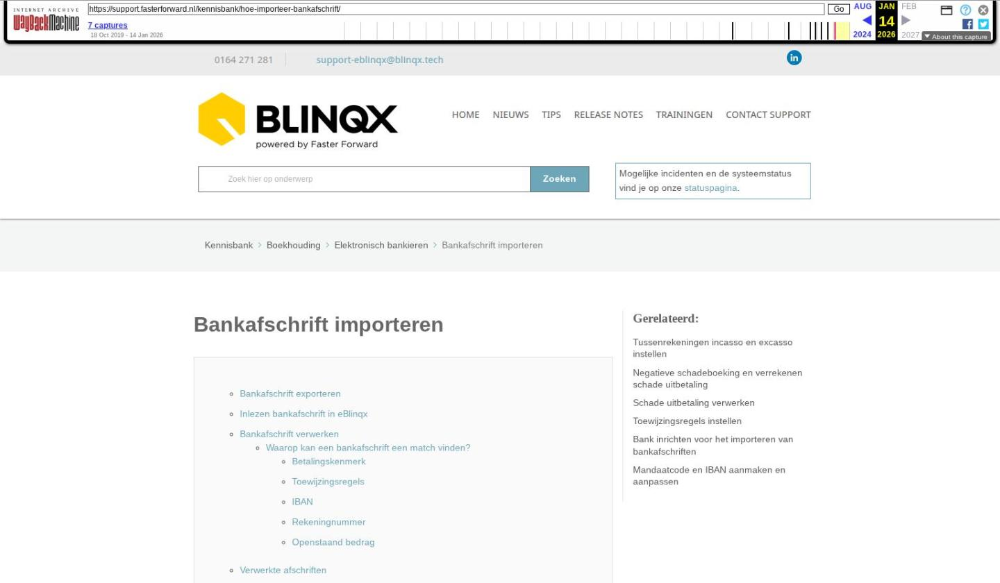

Bankafschrift importeren

Tekstinhoud
Bankafschrift importeren
Bankafschrift exporteren
Inlezen bankafschrift in eBlinqx
Bankafschrift verwerken
Waarop kan een bankafschrift een match vinden?
Betalingskenmerk
Toewijzingsregels
IBAN
Rekeningnummer
Openstaand bedrag
Verwerkte afschriften
Bankafschrift exporteren
Om bankafschriften in te lezen dien je jouw bankafschriften te exporteren via een MT940 bestand ((MT=Message Type) of (SWIFT)-MT940 bestand) of CAMT bestand. Dit is een bestandsformaat om financiële banktransacties te exporteren. Hoewel een globale indeling wordt gebruikt om het MT940 bestand te definiëren is de uiteindelijke implementatie ervan per bank verschillend.
Let op: het MT940 bestand moet één van de volgende bestandsformaten zijn:
.sta
.swi
.txt
.940
Het CAMT bestand betreft CAMT.053 en moet het bestandsformaat .xml hebben om dit in eBlinqx te kunnen uploaden.
Komt je er niet aan uit bij het exporteren van uw elektronische bankafschriften bij jouw bank, dan adviseren wij je om te informeren bij jouw bank. Dat is namelijk verschillend per bank en per telebankieren pakket.
Dit geïmporteerde bestand sla je vervolgens lokaal op jouw pc op.
Inlezen bankafschrift in eBlinqx
Via Financieel – Elektronisch bankieren – Afschriften importeren importeer je het bestand door op het + te klikken.
Je komt nu in het scherm waar de bank gekozen wordt. Daarna kan het bestand worden geüpload.
Staat de juiste bank er niet bij maar staat die bank wel in eBlinqx, dan kan je deze als zodanig instellen. Hoe dit moet, lees je hier.
Bankafschrift verwerken
Na het inlezen van het afschrift kom je in het volgende scherm:
Klik hier in de kolom boekstuk op 'Aanmaken'.
Hierdoor wordt je gelijk doorverwezen naar het boekstuk waar de aanvullingen in plaats vinden. Wanneer een post niet herkend wordt, wordt deze niet automatisch gekoppeld en wordt de regel blauw. De post komt te staan op bijvoorbeeld de grootboekrekening Uit te zoeken posten. Klik op de regel om rechtsboven de inhoud van de post te zien, dit is informatie wat meegegeven is vanuit het bankafschrift. Koppel de post vervolgens aan het grootboek Handelsdebiteuren, de juiste relatie en openstaande post.
Waarop kan een bankafschrift een match vinden?
De posten op het bankafschrift kunnen gematcht worden aan openstaande posten in eBlinqx. Er wordt dan naar verschillende elementen gekeken om een match te kunnen maken.
Betalingskenmerk
Het betalingskenmerk in het bankafschrift moet exact overeenkomen met het betalingskenmerk in eBlinqx. Daarnaast moet het betalingskenmerk voldoen aan het volgende format:
4 opeenvolgende groepen van 4 nummers, direct aan elkaar vast of gescheiden door een – teken
Indien je een betalingskenmerk opgenomen wilt hebben op de factuur kan je deze gemakkelijk in jouw factuur template toevoegen door de tag {factuur->betalingskenmerk} te gebruiken.
Toewijzingsregels
De grootboekrekening en btw code wordt bepaald aan de hand van de toewijzingsregels. Hier lees je er meer over.
IBAN
Bepaalt de relatie en optioneel grootboekrekening aan de hand van IBAN. De IBAN moet onder de relatie opgevoerd staan. Dit kan je controleren in het klantdossiers via Partijen & Objecten – betreffende persoon – tabblad Financieel.
Rekeningnummer
Bepaalt de relatie en optioneel grootboekrekening aan de hand van niet IBAN. Het rekeningnummer hoeft dan geen IBAN nummer te zijn.
Openstaand bedrag
Bepaalt openstaande post aan de hand van openstaand bedrag. Er moet dan wel eerst een match gemaakt zijn op één van bovenstaande punten, zodat de relatie is bepaald. Vervolgens wordt er gekeken naar de openstaande bedragen onder deze relatie. Wanneer er een match is gemaakt op de toewijzingsregels dan moet naast de relatie ook de geselecteerde grootboekrekening in de toewijzingsregel overeenkomen met de geboekte boekingsregel.
Let op! Het boekstuk hoeft niet op 'definitief' gezet te worden. Indien je dit doe, kan je daarna het boekstuk niet meer wijzigen en is het niet mogelijk deze weer open te zetten. Na het koppelen van alle posten ben je dus klaar met de verwerking van het boekstuk.
Verwerkte afschriften
Om een overzicht te zien van de reeds geïmporteerde afschriften ga je terug naar 'Afschriften importeren' en zet je 'Verwerkt' op 'Ja'. Hier zie je de lijst met geïmporteerde bankafschriften.
Door in de kolom boekstuk te klikken op 'openen' wordt gelijk het desbetreffende boekstuk geopend. Het is niet mogelijk om hier de geïmporteerde bankafschriften te verwijderen. Van het geïmporteerde bankafschrift wordt een boekstuk gemaakt. Het is wel mogelijk om het boekstuk te verwijderen.
Laatste update: 5 januari 2026
Was deze informatie nuttig?
Ja Nee